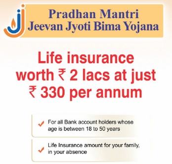

Aim to Change

Pradhan Mantri Jeevan Jyoti Bima Yojana (PMJJBY)
Pradhan Mantri Jeevan Jyoti Bima Yojana (PMJJBY)
Launched: 9 May 2015
Main Objective: Provide life insurance cover to all Indian citizens
Pradhan Mantri Jeevan Jyoti Bima Yojana is a government backed life insurance scheme in India aimed at increasing the penetration of life insurance cover in India. The scheme is open and available to all Indian citizens between the age of 18 to 50 years.Under the scheme, the policy holder can get a life insurance cover of Rs. 2 Lakh with an annual premium of just Rs. 330 excluding service tax. All the Indian citizens between 18-50 years of age with a saving bank account are eligible to avail the scheme.
Official Website: http://www.jansuraksha.gov.in
Pradhan Mantri Jeevan Jyoti Bima Yojana
Highlights of the Pradhan Mantri Jeevan Jyoti Bima Yojana (PMJJBY – Scheme 2 – for Life Insurance) are:
• Eligibility: ICICI Bank Savings Bank (SB) Account holders between 18 years (completed) and 50 years (age nearer birthday) who have given the consent to join the scheme / enable auto-debit, as per the modality, will be enrolled into the scheme.
• Policy period: The cover shall be for one year starting from June 1 to May 31 of next year. For the Savings Account holder joining on or after June 1, the cover shall commence from the date of premium debit and end on May 31 of next year.
• Premium: Rs. 330 (per annum).
• Payment Mode: The premium will be directly auto-debited by the Bank from the subscribers’ Saving Account held with the Bank. This is the only mode available currently. For renewal of the policy, it will be auto debited between May 25 and May 31, unless the customer has given the cancellation request to the Bank for the policy.
• Risk Coverage: Sum Assured of Rs. 2 Lakh on death of the Insured member for any reason is payable to the Nominee.
Termination of assurance:
• Account holder attains age of 55 years
• Closure of account with the Bank or insufficiency of balance for debiting premium.
• In case of multiple coverage under the scheme, the cover will be restricted to Rs.2 lakhs and other insurance covers are terminated and premium shall be forfeited